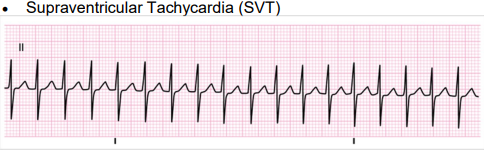
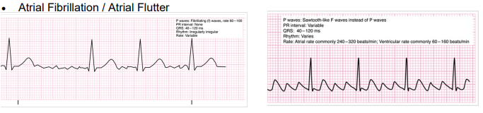
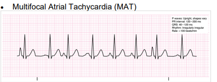
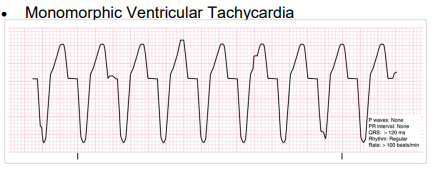
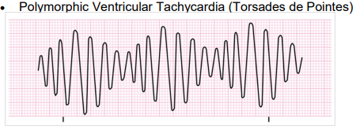

PEARLS
Unstable: Hypotension, Chest Pain with evidence of
ischemia, AMS, signs of shock, acute CHF
Regular Narrow Complex Tachycardia - SVT
Irregular Narrow Complex Tachycardia - Atrial
fibrillation, atrial flutter, multifocal atrial tachycardia
Regular Wide Complex Tachycardia - Ventricular
tachycardia, supraventricular tachycardia, atrial fibrillation/flutter
with aberrancy, accelerated idioventricular rhythms, pre-excited
tachycardias with accessory pathways
Irregular Wide Complex Tachycardia - atrial
fibrillation with aberrancy, pre-excited atrial fibrillation (i.e.
atrial fibrillation using an accessory pathway), polymorphic VT /
torsades de pointes (treat with Mag Sulfate)
• Consider causes for tachycardia (hypovolemia, hypoxia, hydrogen
(acidosis), myocardial infarction, hypokalemia / hyperkalemia,
hypoglycemia, hypothermia, toxins / overdose, tamponade, tension,
pneumothorax , thrombus – central or peripheral, trauma,
hyperthyroidism).
• Atrial fibrillation rarely requires cardioversion in the field. As
it is difficult to ascertain onset of rhythm, risk of stroke needs to
be considered prior to cardioversion
• A wide-complex irregular rhythm should be considered pre-excited
atrial fibrillation; extreme care must be taken in these patients
a. Characteristic ECG findings include a short PR interval and, in
some cases, a delta wave
b. Avoid AV nodal blocking agents such as Adenosine, calcium channel
blockers, Digoxin, and possibly beta-blockers in patients with
pre-excitation atrial fibrillation (e.g. Wolff-Parkinson-White
Syndrome, Lown-Ganong-Levine Syndrome) because these drugs may cause
a paradoxical increase in the ventricular response.
c. Blocking the AV node in some of these patients may lead to
impulses that are transmitted exclusively down the accessory
pathway, which can result in ventricular fibrillation.
• Calcium Channel Blocker administered ONLY with narrow complex
tachydysrhythmia.
• Adenosine may not be effective in identifiable atrial
flutter/fibrillation, yet is not harmful.
• Consider administration of lidocaine over amiodarone for sodium
channel blocker overdose that is not responsive to sodium bicarbonate.
**MODIFIED VALSALVA MANEUVER
1. Have patient blow through a 10 cc syringe in a semi recumbent
position for 15 seconds
2. Lay patient flat and lift their legs to 45 degrees for 15
seconds
3. Return patient to the semi recumbent position for 45 seconds before
reassessing cardiac rhythm
| KEY DOCUMENTATION ELEMENTS | PERTINENT ASSESSMENT FINDINGS |
• Initial rhythm and all rhythm changes • Time, dose and response to meds given • Cardioversion times, attempts, joules and response • Obtain monitor strips after each intervention |
|---|
| QUALITY METRICS |
|
• Correct medication and dose given • Correct cardioversion joules delivered |
Rhythms




